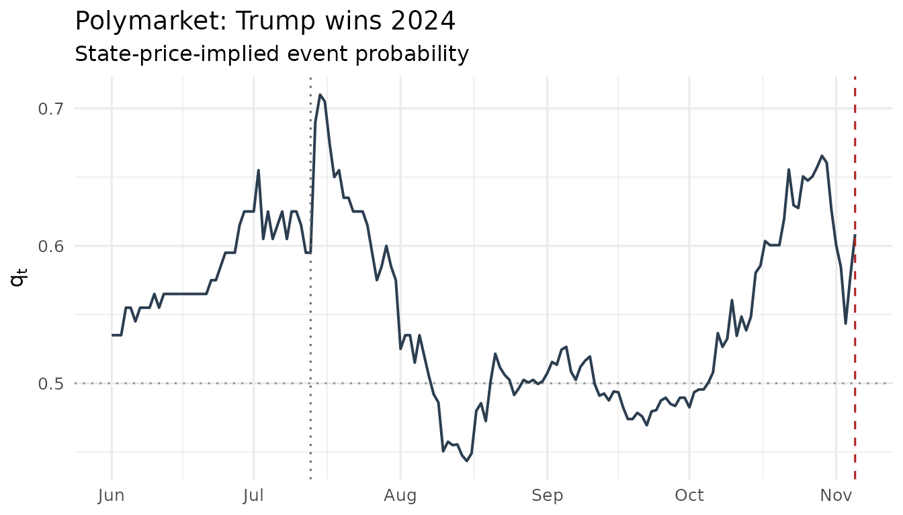

Event betas: assets on the event clock
Source:vignettes/eventclock-event-betas.Rmd
eventclock-event-betas.RmdFrom the clock to asset prices
The event clock answers “how much was learned, and when”. The asset
side asks: “who cares?” To first order, an asset whose event multiplier
has outcome-conditional means
responds to probability news as
so a
regression of returns on probability innovations recovers the event
exposure
— that is event_beta().
What returns can and cannot identify. Returns pin down only the spread , not the levels separately, and not the outcome-conditional dispersions: those require event-spanning option smiles. Two consequences:
- the levels reported by
event_beta()come from the pricing-measure adding-up constraint — they are model-implied, not independently identified; - the loading test
is meaningful only against an externally measured exposure
(option-implied, or from an independent sample); regressing and testing
against the same
would be circular. Supply it via the
detaargument when you have one.
DJT and the 2024 election
The most exposed listed asset to the 2024 U.S. presidential election was Trump Media & Technology Group. Both ingredients ship with the package:
data(djt2024)
data(polymarket2024)
ep <- pm_daily(as_event_prices(polymarket2024,
market_id = "Polymarket: Trump wins 2024",
event_date = as.POSIXct("2024-11-05", tz = "UTC")
))
eb <- event_beta(djt2024, ep)
eb
#> -- Event-beta regression (Newey-West, 4 lags)
#> Event exposure deta_hat = 1.2765 (se 0.4838, t = 2.64), n = 108, R^2 = 0.064
#> Model-implied levels at mean q = 0.554: eta1 = 1.5699, eta2 = 0.2934
#> (No external deta supplied: levels/loading test not identified from returns alone.)The exposure is large — a ten-point move in the win probability moves the stock by roughly percent — and highly significant despite the stock’s enormous idiosyncratic (meme) volatility, which keeps the modest. The regression is the realized variance share of event news over the sample.
The assassination-attempt weekend makes the mechanism visible in a single observation: the win probability jumped by about 9 points and the stock opened 27% higher on Monday, July 15.
plot(ep) +
ggplot2::geom_vline(xintercept = as.Date("2024-07-13"),
linetype = 3, color = "grey40")
Is the event first-order for option prices? The relevance screen
Given an exposure, the sufficient statistic for whether event learning matters for an asset’s option prices is the ratio of learning variance to no-learning variance, :
# ingredients: measured clock, measured exposure, the asset's own vol
A_2w <- event_clock(ep, from = as.Date("2024-10-22"),
to = as.Date("2024-11-05"), methods = "rv")$A
sigma_djt <- sd(diff(log(djt2024$adjusted))) * sqrt(252)
q_pre <- ep$q[ep$time == as.Date("2024-10-22")]
rho <- ec_relevance(deta = eb$deta_hat, q = q_pre, A = A_2w,
sigma = sigma_djt, tenor = 14 / 365)
c(rho = rho, variance_share = rho / (1 + rho),
iv_rule_pp = 100 * sigma_djt * rho / 2)
#> rho variance_share iv_rule_pp
#> 0.1609872 0.1386641 10.5625361Compare this with an FX pair around the same election: with two orders of magnitude smaller, collapses to rounding-error size — the four-lever anatomy of the first-order expansion (exposure squared, movability squared, clock, dilution) decides who cares about the event.
One pipeline, many state prices
Any traded event state price feeds the same machinery. Two more converters ship with the package.
Fed funds futures. The 30-day fed funds future for a meeting month settles on the monthly average rate; the standard extraction turns its price into a meeting-implied move probability:
data(fomc_meetings)
subset(fomc_meetings, year == 2024)[5:8, ]
#> # A tibble: 4 × 3
#> decision_date year sep
#> <date> <int> <lgl>
#> 1 2024-07-31 2024 FALSE
#> 2 2024-09-18 2024 TRUE
#> 3 2024-11-07 2024 FALSE
#> 4 2024-12-18 2024 TRUE
# decision on the 15th of a 30-day month, pre-meeting rate 5.33%,
# futures at 94.79: a 25bp cut is ~96% priced
q_from_ffutures(94.79, pre_rate = 5.33,
meeting_date = as.Date("2024-09-15"), step = -0.25)
#> # A tibble: 1 × 5
#> meeting_date implied_avg implied_post delta_rate q
#> <date> <dbl> <dbl> <dbl> <dbl>
#> 1 2024-09-15 5.21 5.09 -0.240 0.960Merger-arb spreads. A takeover target’s price is itself an event state price; the deal clock is the logit-QV of the implied completion probability:
target_path <- c(40, 41.5, 41, 44, 46, 45.5, 47, 48.5)
q <- q_from_deal_spread(target_path, offer = 50, fallback = 35)
deal <- as_event_prices(
tibble::tibble(time = as.Date("2025-01-06") + seq_along(q) * 7, q = q),
market_id = "Deal clock (toy example)"
)
event_clock(deal, methods = c("rv", "bipower"))
#> # A tibble: 2 × 10
#> market_id from to horizon n_obs n_incr n_gaps max_gap_days
#> <chr> <date> <date> <chr> <int> <int> <int> <dbl>
#> 1 Deal clock (to… 2025-01-13 2025-03-03 2025-0… 8 7 0 7
#> 2 Deal clock (to… 2025-01-13 2025-03-03 2025-0… 8 7 0 7
#> # ℹ 2 more variables: method <chr>, A <dbl>Practical notes
- Match frequencies: with daily returns, collapse intraday probability
data first (
pm_daily()). - Screen the probability series with
ec_validate()and the sampling frequency withec_signature()before interpreting exposures. - Newey-West lags default to
;
pass
lags = 0for plain heteroskedasticity-robust errors. - Add market/factor controls via
controls =to isolate the event channel from general market comovement.